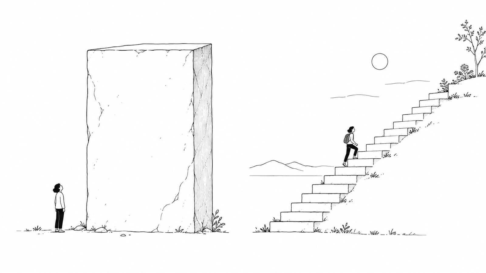

なんでも「高額商品」にすればいい、わけではない。

どーも！とーるです！
「低単価じゃ稼げないよ、って言われたんですけど……」
こういう相談、よくあります。
たしかにSNSで起業系の発信を見ていると、こういう話をよく見ます。
「低単価では稼げない」
「高額商品を作りましょう」
「単価を上げないと疲弊する」
もちろん、僕も高額商品そのものを否定しているわけじゃありません。
サポートや構築のように、時間も労力も必要なものなら、それなりの価格になるのは普通だと思っています。
ただ、
ここは、ちょっと違うんじゃないかなと思っていて。
商品には、それぞれ相性のいい「売り方」があると思うんです。
タピオカに「一生のお客様」を求めなくてもいい
ちょっと極端な例ですが、タピオカ。
一時期、ものすごいブームになりましたよね。
街を歩けばタピオカ。SNSを開いてもタピオカ。
あの頃、タピオカから逃げられる場所なかったですね（笑）
でも、ブームが落ち着けば、お店もかなり減っていきました。
これを見て、「リピーターを作れなかったから失敗した」と考えることもできます。
でも、僕は必ずしもそうとは思わなくて。
そもそもブーム商品って、
という戦い方もできるんですよね。
僕はこういうのを、分かりやすく「ブーム売り」と呼んでいます。
ずっと売り続けることを前提にしない。
市場が盛り上がっている間に、たくさんの新規客を集めて販売する。
もちろん短命になるリスクはあります。
でも、それを分かったうえでやっているなら、それも一つの戦略です。
今でいうと、AI関連の商品なんかも、一部はこの性質を持っていると思います。
AIそのものがなくなるという意味じゃなくて、「今、このAIツールの使い方を知りたい」みたいな需要は、かなり鮮度が重要です。
半年後にはツールも機能も変わっているかもしれない。
だったら、「10年間売れる商品にしよう」と考えるより、今ある需要に、今届ける。
という考え方のほうが合っている場合もあります。
でも、ダイエットの悩みは来年もある
一方で、ダイエット。食事管理。美容。家計管理。子育て。仕事。
人間関係。
こういう悩みってどうでしょう。
来年になったら、「人類はもうダイエットで悩まなくなりました」とは、たぶんならないですよね（笑）
むしろ、こういうものって日常の中で繰り返し発生する悩みです。
3kg痩せたら終わりではなく、今度は体型を維持したくなる。
食生活も改善したくなる。運動も始めたくなる。
年齢が変われば、また別の悩みが出てくる。
だったら、こういう市場で「一回で30万円売るには？」
だけを考える必要はないと思うんです。
LTV（顧客生涯価値）——「いくらで売るか」より「何回選ばれるか」
例えば、5,000円の商品を買ってくれた人がいる。
その商品に満足してくれて、次に1万円の商品を買ってくれる。
さらに数ヶ月後、別の商品も必要になって3万円の商品を買ってくれる。
その後、月額サービスにも入ってくれる。
これって、最初から30万円の商品を売るのとは違う売上の作り方ですよね。
一回の売上だけを見ると、小さい。
でも、
LTVというのは、一人のお客様が、取引が終わるまでにどれだけの利益をもたらしてくれるか、という考え方です。
一回の値札ではなく、合計で見る。
だから僕は、「単価を上げる」だけじゃなく、「何回選んでもらえるか」も考えたほうがいいと思っています。
新規客を集め続けるのは、けっこう大変です
高額商品を一回売って終了。
その人への販売が終わったら、また次の新規客を探す。
そして、また教育して、信頼してもらって、販売する。
もちろん、このモデルが悪いわけではありません。
ただ、
という構造にもなりやすい。
これ、けっこう大変なんですよね。
特にSNSなら、投稿して、リールを作って、ストーリーズを更新して、LINEに誘導して……また最初から。
だったら、一度買ってくれた人に、「次もこの人から買いたい」と思ってもらう設計があってもいい。
日常的な悩みを扱うなら、こっちの考え方はかなり大事だと思っています。
その商品、本当に高額である必要がありますか
ここは一度考えてみてもいいかもしれません。
個別サポートが必要。一人ひとりに合わせた設計が必要。
制作や構築まで代行する。数ヶ月間伴走する。
だったら、当然価格は上がります。
提供する側の労力も大きいですから。
でも、「30万円の商品を作ったほうが売上を作りやすいから」という理由だけで高額化するのは、ちょっと順番が逆な気がします。
30万円の商品を作れば30万円入る。
算数としては、たしかに合ってます（笑）
ただ、それは売れたらの話ですよね。
こっちのほうが自然だと思います。
商品によって「時間軸」が違う
僕は商品を考えるとき、「いくらで売れるか？」だけじゃなく、「この商品は、どの時間軸で売る商品なんだろう？」と考えてみると面白いと思っています。
ブームやトレンドを捉えて、短期間で大きく売る。
日常的な悩みに対して、手に取りやすい商品から関係を作り、何度も選んでもらう。
深い課題に対して、個別伴走や構築まで含めて高額で提供する。
どれが正しい、ではありません。
ただそれだけなんですよね。
だから、「低単価だからダメ」でもなければ、「高額商品を持っていないから稼げない」でもない。
むしろ考えたいのは、自分の商品は、一回で大きく売るものなのか。
それとも、長く何度も選んでもらうものなのか。
ここなんじゃないかなと思っています。
なんでも高額商品にする前に、「この商品、本当はどんな売り方と相性がいいんだろう？」
一度そこから考えてみる。
案外、そのほうが無理のない売上の作り方が見えてくるかもしれません。
とーる｜猫好きの行動経済アナリスト